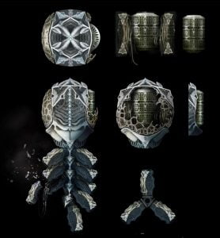
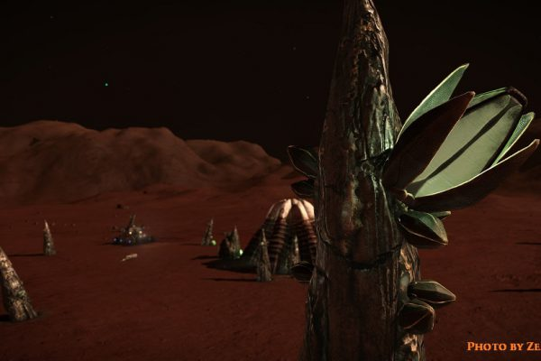

The Unknown Artefact or UA for short are found in a «shell» around the Pleiades nebula. As far as current tests and analysis show, it appears that the Unknown Artefact performs a scan of the closest celestial object or station and then sends out a chittering sound which are a highly distorted morse code which represents that body, the UA will also scan ships within one kilometre and is confirmed to point and align itself to Merope.
The alien structures colloquially referred to as a “Barnacle” is an organic structure, consisting of a central, ribbed peak surrounded by organic structures. The surrounding organic structures have pods attached to it and will drop when shot. These pods could consist of rare materials and a material known as Meta alloy. Meta alloys are highly sought after material for science and as a material to repair stations which have been damaged by the UA’s metal eating properties.Unknown Artefacts and Barnacles have small firefly looking whisps of blue/green lights flying around them. What these fireflies actually are, have yet to be discovered and there are many theories about their origin and usefulness.
However the link between the two objects to have a common starting point is a most common theory only boosted by the recent discovery of the large Unknown Structures and the confirmed reports of Thargoids. Early march 3302 I CMDR Engalo conducted some experiments with an Unknown Artefact at a barnacle site, where I observed what looked to be a interaction between the two objects fireflies. They seemed to pair up and fly in «formation» not deviating from each other as long as the UA was on the ground. When the UA was removed the interaction stopped almost immediately.
Link to the Original Canonn Firefly Fandango broadcast:
https://www.youtube.com/watch?v=JDHhJZaP2Zk
Three days of research followed calling in more scientist from the Canonn group we could conclude that the Firefly Fandango was caused by the mysterious distortion field created by the UA itself. And the whole thing was debunked.
Link to the Original Canonn debunk broadcast:
https://youtu.be/thKimt667Y0
Following are also links to the Galnet News articles: Freelance Report: Canonn Scientist Observes Firefly Fandango
Freelance Report: Firefly Fandango Theory Disproven
Although the interaction was debunked, the unmistakable link between the Unknown Artefact and the Barnacle has been manifested after the confirmed reports of Thargoid vessels interacting with the barnacle itself. The conclusion is that there is still a lot to the mystery surrounding these objects still to be discovered.
References:
Written and submitted for Canonn Research by: Commander Engalo